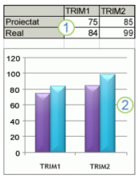

|  |
|
Crearea diagramelor în Excel
- Selectaţi tabelul sau porţiunea de tabel pentru care vreţi să realizaţi o diagramă
- În fila Inserare (Insert), în grupul Diagrame (Chart), faceţi clic pe grupul de diagrame dorit (Column, Line, Pie, Area, Scatter sau Other Chart) şi din lista afişată alegem tipul de diagramă dorit.
Adăugarea la diagrame a formatărilor care atrag atenţia
Pentru a adăuga formatări, selectaţi fila Formatare (Format) şi folosind uneltele din această filă aveţi posibilitatea să:
|